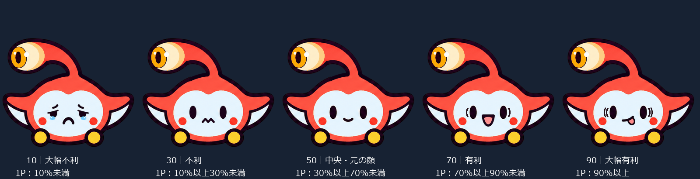

ぷよぷよeスポーツの対戦映像を入力し、盤面を認識します。
FOR PUYO PUYO CHAMPIONS / OBS
公開準備中 · 0.6.0 下書き
対戦の流れを、
配信に。
盤面から有利不利を推定。
ゼウスくんの表情とオーバーレイで、観戦にもうひとつの視点を。
Windows x64 向け · 署名なし ZIP · MIT License
0.6.0 の公開・動作確認は未完了です。リンク先の版名をご確認ください。
01 / DISPLAY
表情で伝わる、いまの形勢。

盤面と学習モデルから推定します。勝敗を保証する表示ではありません。
ブラウザソースで配信へ。表示の位置や内容は設定画面で調整できます。
02 / GET STARTED
ZIP からはじめる。
ダウンロードして確かめる
Releases から配布 ZIP と SHA256SUMS を取得します。「Source code」は実行用 ZIP ではありません。版名・既知の制約を読んでください。
フォルダへ展開する
ZIP を右クリックして「すべて展開」。書き込み可能な場所に置き、ZIP の中から直接起動しないでください。
OBS の入力を準備する
ゲーム映像を 16:9・1920×1080 に合わせ、OBS の仮想カメラを開始します。認識用の入力には、本ツールの表示を重ねないゲーム映像を使います。
専用窓の案内に従う
puyoZeus Live.vbsを開き、初回の入力選択・画面調整を進めます。専用窓を開けない場合はブラウザーに切り替わることがあります。配信に表示する
OBS にブラウザソースを追加し、初期設定の最後に表示された URL をコピーします。通常は
http://127.0.0.1:8765/、幅 1920・高さ 1080 です。ポートが変更された場合は表示された URL を優先します。既存のソースは起動後に再読み込みしてください。表情の自動切替は配布の既定でオンです。不要な場合は、設定の「マスコットの表情を勝率で変える」をオフにできます。
03 / REQUIREMENTS
動く環境と、できる範囲。
Windows x64、OBS Studio と仮想カメラ、ぷよぷよeスポーツの対戦映像を想定しています。配布 ZIP に Python と実行用モデルを同梱する予定です。Python を別に導入する手順はありません。
Windows の対応版・OBS の確認済み版・必要メモリは最終 ZIP の初回導入試験（C5）後に確定します。専用窓は WebView2 Runtime を利用し、利用できない場合は通常のブラウザーへ退避します。
- 上級者対戦のデータに基づく推定です。初級者対戦や別タイトルの精度は保証しません。
- 解像度・配置・色・映像の遅延で誤認識や表示遅れが起きます。安定した盤面が読めない間は、表示を保持することがあります。
- 推定は参考情報です。個々の試合の勝敗やプレイヤーの強さを断定しません。
- 216 本のデータによる次期モデルは、この 0.6.0 の採用確定事項に含めません。
04 / HELP
よくある質問
SmartScreen が表示される
この配布物は署名なしです。GitHub の正しいリポジトリ・版名・SHA256 を確認し、信頼できると判断した場合のみ「詳細情報」→「実行」を選びます。その選択肢がない場合や組織の管理下では、制限を解除せず管理者に相談してください。Windows の保護機能全体を無効にする必要はありません。
Visual C++ の DLL が見つからない
Microsoft 公式の Visual C++ 再頒布可能パッケージから x64 版を確認してください。個別の DLL を非公式サイトから取得しないでください。解消しない場合は表示されたエラー文を Issue に記載します。
表示が出ない・入力を読めない
OBS の仮想カメラ、入力番号、1920×1080・16:9 の映像、入力への重ね表示の混入を確認します。アプリ起動後にブラウザソースを再読み込みし、設定と OBS のポートを一致させてください。初回の画面調整が終わるまでは判定を待ちます。
止め方・消し方
画面内または通知領域の「終了」を使います。専用窓の × は窓を隠す操作で、処理は終了しません。終了後に展開フォルダを削除できます。設定を LocalAppData に保存した場合は %LOCALAPPDATA%\PuyoLive の必要な設定を退避し、不要なら別途削除します。OBS のブラウザソースも不要なら削除してください。
不具合を報告したい
不具合報告へ、版・Windows・OBS・入力方法・再現手順を記載してください。ログ全文やゲーム映像をそのまま投稿せず、ユーザー名・パス・配信キー等を除いた必要最小限の文字情報を送ってください。
配信に、もうひとつの視点を。
An unofficial OBS overlay for Puyo Puyo Champions. Estimates the match advantage from gameplay video. Windows x64 ZIP; unsigned. Please read the release notes before use.
Releases を開く ↗